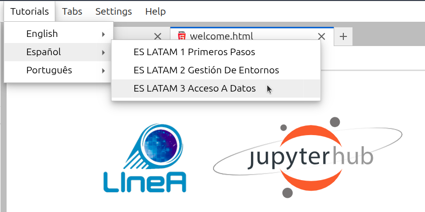

JupyterHub
JupyterHub es un entorno de desarrollo multiusuario basado en IPython Notebooks que proporciona acceso a recursos computacionales compartidos en un servidor remoto, sin necesidad de instalación ni mantenimiento por parte de los usuarios. Los únicos requisitos para acceder a JupyterHub son: disponer de una cuenta de usuario en LIneA (consulte aquí cómo crear su cuenta) y un navegador web con acceso a Internet. Los llamados Jupyter Notebooks permiten combinar código interactivo, resultados de ejecución, texto explicativo y recursos multimedia en un único documento.
Como parte de la LIneA Science Platform, el LIneA JupyterHub está integrado con las demás herramientas de visualización y acceso a datos. De este modo, todo el análisis de datos puede realizarse en línea dentro de la plataforma, desde la lectura, visualización y procesamiento hasta el análisis de resultados, sin necesidad de descargar los datos al ordenador personal del usuario.
Pantalla de inicio¶
Al hacer clic en la tarjeta "JupyterHub" dentro de la LIneA Science Platform (o accediendo directamente a través de la dirección jupyter.linea.org.br), será redirigido a la página de inicio de sesión y, a continuación, a la pantalla principal, que muestra las diferentes opciones de configuración del servidor Jupyter.

Configuraciones disponibles¶
Imágenes de Docker preconfiguradas¶
La instalación predeterminada de LIneA JupyterHub se basa en contenedores Docker con entornos previamente configurados para satisfacer la mayoría de las necesidades de los usuarios. Hay cuatro opciones de imágenes de Docker disponibles:
- DataScience – la pila Jupyter Data Science Notebook, que incluye bibliotecas populares de ciencia de datos como Pandas, NumPy, Matplotlib, SciPy y Scikit-learn.
- Astronomy – la pila genérica de astronomía, que incluye las principales bibliotecas de ciencia de datos, así como las bibliotecas más utilizadas en el área, como Astropy, Astroquery, Healpy, Photutils, PyVO, Dustmaps, LSDB y AstroML, entre otras.
- SolarSystem – la pila específica para el estudio del Sistema Solar, que incluye las principales bibliotecas de las imágenes DataScience y Astronomy, además de bibliotecas especializadas como sbpy, spiceypy, rebound, sora-astro y reboundx, entre otras.
- IRAF Data Reduction – una imagen personalizada diseñada para apoyar tareas que dependen de la reducción y manipulación de imágenes astronómicas utilizando herramientas tradicionales como IRAF y DS9 (herramientas más modernas como Astropy CCDProc, Photutils y Reproject están disponibles en la imagen Astronomy).
Consulte aquí la lista de las principales bibliotecas incluidas en los entornos y los enlaces a sus respectivas documentaciones.
| Categoría | Biblioteca | Para qué sirve | Doc |
|---|---|---|---|
| Ciencia de Datos y ML |
corner | Visualización de distribuciones posteriores. | doc |
| dynesty | Muestreo bayesiano tipo nested sampling. | doc | |
| emcee | Muestreo MCMC. | doc | |
| lmfit | Ajuste de modelos no lineales. | doc | |
| NumPy | Operaciones numéricas y arreglos multidimensionales. | doc | |
| Pandas | Análisis de tablas y manipulación de datos. | doc | |
| scikit-image | Procesamiento de imágenes. | doc | |
| scikit-learn | Aprendizaje automático y modelos predictivos. | doc | |
| SciPy | Funciones científicas avanzadas y métodos numéricos. | doc | |
| Visualización | Bokeh | Visualizaciones interactivas para la web. | doc |
| Datashader | Renderizado de grandes volúmenes de datos. | doc | |
| HoloViews | Visualización declarativa de datos. | doc | |
| hvPlot | API de alto nivel para visualización. | doc | |
| Matplotlib | Visualización científica 2D/3D. | doc | |
| Plotly | Gráficos interactivos y dashboards. | doc | |
| Seaborn | Visualizaciones estadísticas de alto nivel. | doc | |
| Bases de Datos, Jupyter y Utilidades |
psycopg2 | Conector PostgreSQL para Python. | doc |
| SQLAlchemy | ORM y toolkit SQL para manipulación de bases de datos. | doc | |
| pooch | Gestión de descarga de datasets. | doc | |
| Dask | Computación paralela y distribuida. | doc | |
| IPykernel | Kernel de Python para notebooks. | doc | |
| Astronomía | astrocut | Recorte de imágenes astronómicas. | doc |
| astroML | Aprendizaje automático aplicado a la astronomía. | doc | |
| Astropy | Herramientas centrales de astronomía. | doc | |
| Astroquery | Consultas a archivos y catálogos astronómicos en línea. | doc | |
| Cartopy | Mapas y proyecciones geoespaciales. | doc | |
| Dustmaps | Mapas de extinción de la Vía Láctea. | doc | |
| HATS Import | Conversión de catálogos al formato HATS. | doc | |
| Healpy | Manipulación de mapas HEALPix. | doc | |
| ipyaladin | Visualización interactiva del cielo (Aladin Lite en Jupyter). | doc | |
| lineassp | API del LIneA Solar System Portal. | doc | |
| lightkurve | Análisis de curvas de luz (Kepler/TESS). | doc | |
| LSDB | Análisis escalable de catálogos. | doc | |
| Photutils | Fotometría y detección de fuentes. | doc | |
| pyspeckit | Ajuste y análisis espectral. | doc | |
| pyspac | Análisis y caracterización de la curva de fase solar. | doc | |
| PyVO | Acceso a servicios del Virtual Observatory. | doc | |
| pzserver | Acceso remoto a datos y ejecución de pipelines del PZ Server. | doc | |
| rail | Pipeline de redshift fotométrico. | doc | |
| Regions | Manipulación de regiones del cielo. | doc | |
| Reproject | Reproyección de imágenes astronómicas. | doc | |
| specutils | Análisis espectral astronómico. | doc | |
| Sistema Solar |
rebound | Simulaciones de N-cuerpos. | doc |
| reboundx | Extensiones para REBOUND. | doc | |
| sbpy | Herramientas para ciencia de cuerpos menores. | doc | |
| spiceypy | Interfaz Python para SPICE (NASA). | doc | |
| sora-astro | Análisis de ocultaciones estelares. | doc |
Recursos Computacionales¶
Configuración de los Servidores del Entorno K8S
La plataforma JupyterHub se ejecuta sobre un clúster de Kubernetes (K8S) y cuenta con 12 servidores físicos dedicados. Cada máquina está equipada con los siguientes recursos computacionales:
| Configuración del Nodo de Kubernetes | |
|---|---|
| RAM | 64 GB |
| Hilos por núcleo | 2 |
| Núcleos por socket | 6 |
| Sockets | 2 |
Configuraciones Disponibles para los Usuarios
En la página inicial, en el lado derecho se mostrará un menú con hasta tres opciones de recursos computacionales que se reservarán simultáneamente para el servidor Jupyter de cada usuario. Las opciones disponibles son las siguientes:
| Tamaño | CPUs | RAM |
|---|---|---|
| Small | 1.0 | 4 GiB |
| Medium | 2.0 | 8 GiB |
| Large | 4.0 | 16 GiB |
Las opciones que ofrecen más de una CPU permiten la ejecución de código en paralelo, lo que puede resultar útil para tareas que se benefician de múltiples núcleos, como simulaciones numéricas o el entrenamiento de modelos de aprendizaje automático. Sin embargo, el JupyterHub basado en K8S está diseñado como un entorno de desarrollo ligero e interactivo y no está optimizado para cargas de trabajo intensivas en CPU o memoria. Para tareas más exigentes, que impliquen procesamiento de datos a gran escala o entrenamiento de modelos complejos, se recomienda utilizar el otro servicio de Jupyter disponible en la plataforma Ondemand, que ofrece acceso directo a la infraestructura de HPC de LIneA.
Jupyter sobre K8S vs Jupyter sobre HPC
LIneA ofrece dos entornos separados de Jupyter Notebook. El primero se ejecuta en contenedores en la plataforma Kubernetes (K8S) y está integrado con la base de datos Postgres y el sistema de archivos. El segundo está disponible en la plataforma Ondemand y accede directamente a la infraestructura de HPC.
Gestión de Entornos¶
Si su trabajo requiere bibliotecas adicionales o la fijación de versiones específicas, recomendamos utilizar el gestor de paquetes Conda. Para obtener más información, consulte el tutorial oficial de Conda y la Cheat Sheet proporcionada por el proyecto, que incluye una lista de los comandos más útiles.
Cómo Crear un Entorno Personalizado¶
Por ejemplo, crearemos un entorno con Python 3.12 llamado myenv. Para abrir una Terminal, en el menú superior de JupyterLab haga clic en:
File > New > Terminal
Comencemos verificando los entornos disponibles.
conda env list
Si accede por primera vez, solo verá el entorno base disponible.
Creación del nuevo entorno:
conda create -n myenv python=3.12
Activar el Entorno¶
Para activar el entorno:
conda activate myenv
Después de esto, puede instalar paquetes normalmente utilizando Conda o Pip. Por ejemplo:
conda install numpy=1.26
pip install astropy=7.1
Para que el nuevo entorno esté disponible en un notebook, es necesario registrarlo como un kernel.
Cómo Registrar el Entorno como Kernel de Jupyter¶
Crear un Nuevo Kernel¶
La creación de un nuevo kernel a partir de un entorno Conda se realiza mediante la biblioteca ipykernel. Esta ya está disponible en el entorno base.
python -m ipykernel install --user --name myenv --display-name "MyEnv"
Una vez creados, los kernels estarán disponibles para iniciar nuevos notebooks en la pestaña "Launcher" o podrán seleccionarse desde el menú ubicado en la esquina superior derecha del notebook. Para listar los kernels existentes:
jupyter kernelspec list
Eliminar el Kernel¶
Para eliminar un kernel:
jupyter kernelspec remove myenv
Eliminar el Entorno¶
Si desea eliminar el entorno:
conda env remove --name myenv
Acceso a Datos¶
Base de Datos¶
LIneA dispone de una base de datos dedicada al almacenamiento de datos astronómicos tabulares, gestionada por el sistema Postgres. Esta base de datos almacena catálogos, mapas y tablas auxiliares liberados por levantamientos astronómicos, así como tablas creadas por los usuarios como resultado de consultas o cargas de datos. El acceso a los datos alojados en la base desde un notebook en JupyterHub se realiza mediante la biblioteca pyvo a través del servicio TAP, con consultas programáticas escritas en SQL o ADQL.
Configuración
Para conectarse a la API del servicio TAP de LIneA, utilizaremos las bibliotecas requests y PyVO. PyVO es un paquete afiliado a Astropy que permite realizar consultas remotas de datos astronómicos desde repositorios que cumplen con los estándares de los protocolos de servicio de la IVOA.
import pyvo
import requests
El primer paso es establecer una conexión con el servicio TAP de LIneA:
tap_session = requests.Session()
tap_url = "https://userquery.linea.org.br/tap"
tap_service = pyvo.dal.TAPService(tap_url, session=tap_session)
A continuación, podemos realizar consultas utilizando los lenguajes SQL o ADQL. Por ejemplo, para consultar la tabla gaia_dr3.gaia_source y obtener las primeras 10 filas:
query = "SELECT TOP 10 * FROM gaia_dr3.gaia_source"
result = tap_service.search(query)
El resultado de la consulta se devuelve como un objeto de tipo pyvo.dal.TAPResults, que puede convertirse en una astropy.table.Table. Esta, a su vez, puede convertirse opcionalmente en un DataFrame de Pandas para facilitar la manipulación y el análisis de los datos:
from astropy.table import Table
import pandas as pd
table = Table(result.to_table())
df = table.to_pandas()
Acceda aquí a la documentación completa sobre el acceso a la base de datos Postgres de LIneA con la biblioteca pyvo: TAP Service
LSDB¶
El Large Scale Database (LSDB) es una biblioteca de Python desarrollada por el LSST Interdisciplinary Network for Collaboration and Computing (LINCC) en el marco del Legacy Survey of Space and Time (LSST). Está diseñada para facilitar el acceso y el análisis de grandes conjuntos de datos astronómicos. Un amplio repositorio de datos públicos es puesto a disposición por el proyecto en el sitio web LSDB.io.
LIneA alberga una copia local de estos datos, integrándose al ecosistema internacional de LSDB.io. Esta infraestructura ofrece una mayor eficiencia en la transferencia de datos para usuarios geográficamente cercanos a Brasil y permite que la comunidad astronómica brasileña acceda y analice estos conjuntos de datos de manera optimizada utilizando recursos de computación de alto rendimiento (HPC).
El acceso a los datos del LSDB desde JupyterHub se realiza mediante la biblioteca lsdb, que proporciona una interfaz en Python para realizar consultas y manipular los datos almacenados en LSDB. Aunque LSDB está optimizado para manejar grandes volúmenes de datos, también puede ser útil para consultas pequeñas. Visite la lista de tutoriales en la página oficial de LSDB para aprender cómo aprovechar esta potente herramienta en todo su potencial.
Para realizar una consulta sencilla, basta con importar la biblioteca y abrir un catálogo específico. Por ejemplo, para acceder al catálogo de objetos del DES DR2 alojado en el LSDB de LIneA:
import lsdb
import pandas as pd
El comando siguiente aún no carga los datos en la memoria local; solo planifica la recuperación de estas columnas del catálogo ubicado en la URL especificada.
cat = lsdb.open_catalog("https://linea.data.lsdb.io/hats/des/des_dr2",
columns=["COADD_OBJECT_ID", "RA", "DEC", "MAG_AUTO_G_DERED", "MAG_AUTO_R_DERED",
"EXTENDED_CLASS_COADD", "FLAGS_G", "FLAGS_R"])
La variable cat almacena un objeto de tipo Catalog, que contiene métodos y atributos que se utilizarán también de forma perezosa, sin ejecutar cálculos. Por ejemplo, realizaremos una búsqueda espacial en la región del cúmulo estelar de Sculptor, con un radio de 0.5 grados:
sculptor_stars = cat.cone_search(ra=15.03875, dec=-33.70916667, radius_arcsec=0.5 * 3600)
Después de definir las columnas y la región de interés, podemos ejecutar la consulta utilizando el método compute() y finalmente cargar los datos en un DataFrame de Pandas:
df = sculptor_stars.compute()
Tutoriales en Jupyter Notebooks¶
En el menú Tutorials de la barra superior de JupyterLab encontrará plantillas de notebooks con ejemplos de uso para aprender a:
- Utilizar un Jupyter Notebook (si es principiante)
- Personalizar su entorno con bibliotecas y versiones específicas
- Acceder a los datos alojados en LIneA directamente desde un notebook

Los tutoriales están disponibles en el repositorio público de LIneA en GitHub, jupyterhub-tutorial, y se actualizan periódicamente para incluir nuevos ejemplos de uso y abordar las dudas más frecuentes de los usuarios. Al hacer clic en un tutorial específico, el sistema crea una copia del notebook en el directorio actual del área del usuario, garantizando que cada persona pueda ejecutarlo y realizar modificaciones en su(s) propia(s) copia(s).
Al iniciar sesión en JupyterHub, el sistema crea una copia de todos los notebooks de tutoriales en el directorio $HOME/notebooks/tutorials/ dentro del área del usuario. No se recomienda modificar los archivos originales para evitar que se pierdan las actualizaciones futuras. Si desea conservar una copia personalizada, recomendamos utilizar siempre el menú Tutorials para crear una nueva copia actualizada en el directorio de trabajo actual.
Asistente de IA (Experimental)¶
El asistente de IA en JupyterLab es proporcionado por la extensión Jupyter AI (v2) y admite los magic commands %ai y %%ai.
Uso rápido (flujo mínimo)¶
%load_ext jupyter_ai_magics
%ai list
%%ai coder1b
Describe el teorema de Pitágoras
Opcional (para un contexto mayor, en el chat):
/learn *.ipynb
/ask Resume este notebook.
1) Chat Jupyternaut¶
En JupyterLab, abra el panel lateral de Jupyternaut (icono de chat). Después de configurar el modelo/las claves, puede usar comandos con barra (/) directamente en el chat:
/learn <ruta|patrón>: indexa archivos locales para usarlos como contexto./ask <pregunta>: pregunta específicamente sobre el contenido aprendido con/learn./learn -d: limpia la base local de conocimiento creada por/learn./fix: ayuda a corregir una celda con error (el chat le pide seleccionar la celda con error)./export [archivo.md]: exporta el historial de la conversación a Markdown./clear: inicia una nueva conversación y limpia el contexto actual del chat.
Uso práctico de /learn (diferencial)¶
En LIneA, /learn usa embeddings locales (modelo predeterminado: nomic-embed-text).
El contenido se procesa en partes (chunks) y se convierte en embeddings locales.
Estos datos se usan para la recuperación de contexto (RAG) durante el chat.
Características:
- no cambia el modelo;
- no es memoria permanente (puede limpiarse con
/learn -d); - es ideal para documentación, notebooks y código;
- dónde se almacena: base vectorial local de Jupyter AI en
~/.local/share/jupyter/jupyter_ai; - el chunking en LIneA está controlado por
LINEA_CHUNK_SIZE(predeterminado 1200) yLINEA_CHUNK_OVERLAP(predeterminado 240). Por eso, los parámetros-c/-opueden ser sobrescritos por el entorno o la política configurada; - por defecto ignora
node_modules,lib,buildy archivos ocultos (use-apara incluir todo).
Cuándo usar cada comando:
/ask: cuando la pregunta depende de los archivos indexados por/learn(pregunta contextual sobre documentación/código local).- Chat normal: cuando la pregunta es general y no depende del contenido local indexado.
Ejemplo real:
/learn docs/
/ask ¿Cuáles son los endpoints de la API?
Chat vs Magic Commands: cuándo usar cada uno¶
| Herramienta | Uso recomendado |
|---|---|
| Chat (Jupyternaut) | exploración, preguntas generales, uso con /learn |
%%ai |
ejecución estructurada dentro del notebook |
%ai |
comandos auxiliares (listar modelos, reset, alias, etc.) |
2) Magic commands¶
Antes de usar los comandos:
%load_ext jupyter_ai_magics
Comandos principales:
%%ai <proveedor:modelo>(o alias): envía un prompt en una celda a un modelo.
Ejemplo:%%ai coder1b Resume los puntos principales de este análisis.%ai helpy%%ai help: ayuda de sintaxis y opciones.%ai list [proveedor]: lista los modelos disponibles (general o por proveedor).%ai reset: limpia el historial usado como contexto en las próximas llamadas.%ai error <proveedor:modelo>: explica el error más reciente del notebook.%ai register <alias> <proveedor:modelo>: crea un alias de modelo.%ai update <alias> <nuevo-proveedor:modelo>: actualiza un alias.%ai delete <alias>: elimina un alias.
Recursos útiles de %%ai:
- formato de salida con
-f/--format(code,markdown,math,html,json,text,image); - interpolación de variables con
{variable}en el prompt; - definición del modelo predeterminado:
%config AiMagics.default_language_model = "linea:qwen2.5-coder:1.5b"
Alcance de %%ai:
Los comandos %%ai no tienen acceso automático al contenido de otras celdas del notebook.
Por defecto, el modelo recibe solo:
- el texto de la celda actual;
- variables interpoladas explícitamente en el prompt (por ejemplo,
{variable}).
Ejemplo que no funciona como se espera:
%%ai coder1b
Explica cómo está organizado este notebook.
En este caso, el modelo no recibe el resto del notebook y la respuesta tiende a ser genérica.
Cómo proporcionar contexto correctamente¶
- Interpolar variables de Python:
contenido = "texto de otra celda o análisis"
%%ai coder1b
Explica:
{contenido}
- Usar
/learnpara múltiples archivos o notebooks (en el chat):
/learn *.ipynb
/ask ¿Cómo está organizado este notebook?
En este modo, el asistente usa embeddings para recuperar automáticamente los fragmentos relevantes.
3) Modelos externos (configuración)¶
Hay dos escenarios de uso:
- Local (LIneA): funciona out of the box, sin clave de API. Sin embargo, los modelos son más pequeños y más propensos a alucinaciones.
- Externo (proveedores de terceros): requiere configurar credenciales y, en algunos casos, dependencias adicionales.
Flujo para un proveedor externo:
- configure las credenciales (variables de entorno o panel de configuración del chat);
- confirme con
%ai listsi el modelo está disponible.
Claves persistentes (~/.linea/apikeys.env)¶
El entorno de LIneA puede mantener sus credenciales en un archivo dentro de su HOME:
~/.linea/apikeys.env
Este archivo contiene variables como OPENAI_API_KEY, GROQ_API_KEY, NVIDIA_API_KEY, ANTHROPIC_API_KEY y GOOGLE_API_KEY.
Para que los cambios tengan efecto, reinicie el kernel/la sesión (o reinicie JupyterLab) después de editar este archivo.
Proveedor local de LIneA¶
Además de los proveedores externos, el entorno también expone:
- proveedor
linea(chat local vía Ollama, sin clave de API); - proveedor
lineapara embeddings (mostrado en el selector como LIneA (embeddings)).
Modelos de chat locales disponibles en el proveedor linea:
qwen2.5-coder:0.5bqwen2.5-coder:1.5bqwen2.5-coder:3bqwen2.5-coder:7b
Atención
Los modelos Qwen2.5-Coder están optimizados para tareas de programación, con tamaños que van de 0.5B a 7B parámetros para diferentes compromisos entre velocidad y calidad. Use los modelos más pequeños (0.5B-1.5B) para tareas simples y respuestas rápidas en entornos con recursos limitados, y los más grandes (3B-7B) para problemas más complejos. Tenga cuidado al usar modelos pequeños para lógica intrincada o requisitos críticos de seguridad, ya que tienden a alucinar y cometer errores. Recuerde también que no tienen acceso automático al contexto completo del notebook, así que interpole variables o incluya explícitamente el contenido relevante en el prompt para obtener mejores resultados.
Ejemplos:
%load_ext jupyter_ai_magics
%ai list linea
%%ai coder1b
Escribe una función de Python para leer un CSV usando numpy.
Por defecto, el entorno ya incluye alias para el proveedor linea.
Para usar solo el modelo de 1.5b, utilice coder1b (equivale a linea:qwen2.5-coder:1.5b):
%%ai linea:qwen2.5-coder:1.5b
Escribe una función de Python para leer un CSV usando numpy.
Para modelos más potentes y acceso gratuito, busque proveedores que ofrezcan algún nivel de acceso gratuito. Proveedores como la startup groq (https://console.groq.com/home) o nvidia (https://build.nvidia.com/) ofrecen capas de acceso gratuito mediante claves API.
Proveedor groq:
- autenticación: informe la clave en el campo
GROQ_API_KEYen la configuración de Jupyter AI.
Ejemplo de uso con proveedor externo (Groq):
%env GROQ_API_KEY=SU_CLAVE_GROQ
%ai list groq
%%ai groq:<SU_MODEL_ID>
Resume los puntos principales de este notebook.
Proveedor nvidia:
- autenticación: informe la clave en el campo
NVIDIA_API_KEYen la configuración de Jupyter AI.
Ejemplo de uso con proveedor externo (NVIDIA):
%env NVIDIA_API_KEY=SU_CLAVE_NVIDIA
%ai list nvidia
%%ai nvidia:<SU_MODEL_ID>
Resume los puntos principales de este notebook.
%env vs export (cuándo definir claves)
Cuando un proveedor requiera una clave (por ejemplo, groq):
%env GROQ_API_KEY=...(oNVIDIA_API_KEY=...): se aplica al kernel actual (efecto inmediato para%ai/%%ai);export GROQ_API_KEY=...(oexport NVIDIA_API_KEY=...): se aplica al shell, pero no necesariamente a los kernels iniciados después. Es necesario importar la variable de entorno dentro del código. Para persistencia, use claves persistentes.
Ejemplo rápido con modelo local de LIneA (sin clave):
%load_ext jupyter_ai_magics
%config AiMagics.default_language_model = "linea:qwen2.5-coder:1.5b"
%%ai
Explica este error de Python y propón una corrección.
Importante: los proveedores externos pueden generar costos por uso de API. Revise precios y políticas de privacidad antes de enviar datos sensibles.
Solución básica de problemas¶
1) El modelo no aparece en %ai list
- confirme si el proveedor es correcto (por ejemplo,
%ai list lineao%ai list groq); - para un proveedor externo, verifique si las dependencias y credenciales fueron configuradas;
- recargue la extensión en el notebook:
%load_ext jupyter_ai_magics
%ai list
2) Error de autenticación
- para
groq, confirme siGROQ_API_KEYfue definido en el kernel actual (%env GROQ_API_KEY=...); - si la clave fue definida con
exportdespués de abrir el notebook, reinicie el kernel/la sesión; - verifique que no haya espacios extra ni valor truncado en la clave.
3) El kernel no reconoce %ai o %%ai
- cargue la extensión:
%load_ext jupyter_ai_magics; - si persiste, reinicie el kernel y ejecútelo nuevamente;
- en kernels remotos, instale el paquete en el propio kernel con
%pip install jupyter_ai_magics.
Referencia oficial: Jupyter AI v2 Documentation